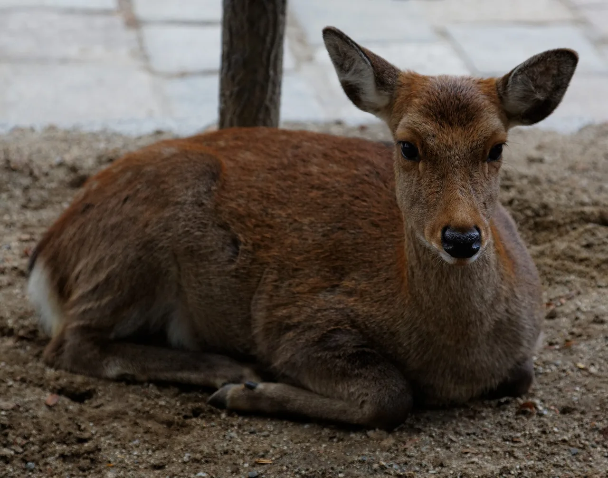

Nara 旅遊指南（為日語學習者撰寫）
重點
奈良是日本的第一個永久首都（710-784），擁有比其他任何都道府縣更多的聯合國教科文組織世界遺產地，其中古老的寺廟、自由漫步的sacred鹿群和櫻花盛開的山區相遇。這個內陸的關西都道府縣是日本最早court文化的活生生博物館。
📍 必看: Todai-ji Temple · 🥢 必嚐: Kakinoha-zushi (persimmon-leaf sushi) · 來源
日本的第一個首都——一尊巨大的佛像和自由漫遊的鹿。

🍜 美食 ▰▱▱▱▱ 🏯 文化 ▰▰▰▰▰ 🏙 城市 ▰▰▰▰▱ 🚄 交通 ▰▱▱▱▱ 🌿 自然 ▰▱▱▱▱
🥢 必嚐: Kakinoha-zushi (persimmon-leaf sushi) · 📍 必看: Todai-ji Temple
🗣 鹿にせんべいをあげてもいいですか。 Shika ni senbei wo agete mo ii desu ka.
奈良在8世紀時是日本的首都，保存著該國一些最古老的寺廟。野生梅花鹿在其中央公園自由漫遊，會為了餅乾而鞠躬。
必看景點
★ Todai-ji Temple★ Kasuga Taisha Shrine★ Nara Park & the sacred deer💎 Muro-ji Temple (the 'women's Koyasan')💎 Naramachi historic merchant district
- Tōdai-ji 及其大佛（聯合國教科文組織世界遺產）
- 奈良公園的鹿
- Kasuga Taisha 神社
- Hōryū-ji，世界上最古老的木造建築之一
必吃美食
★ Kakinoha-zushi (persimmon-leaf sushi)★ Miwa Somen★ Narazuke (sake-lees pickles)💎 Cha-gayu (tea rice porridge)💎 Iro-gohan (colored rice / seasonal kamameshi)
柿葉壽司（柿葉包裹的壽司）和麻糬。
如何前往與最佳季節
如何前往: 奈良距離 Kyoto 和 Osaka 都約 45 分鐘的電車車程。
最佳季節: 任何季節都很適合；是從 Kyoto 或 Osaka 出發的輕鬆一日遊。
學個日語
きれいですね。
Kirei desu ne. — "鹿——奈良公園自由漫遊的居民"
在地詞彙
鹿
shika — 鹿——奈良公園自由漫遊的居民
💡 小提醒
鹿用的餅乾（shika-senbei）在公園周圍販售；鹿會為了得到餅乾而鞠躬。
資料來源: Japan National Tourism Organization (JNTO).
事實依官方旅遊資訊查核，觀點為我們所有。